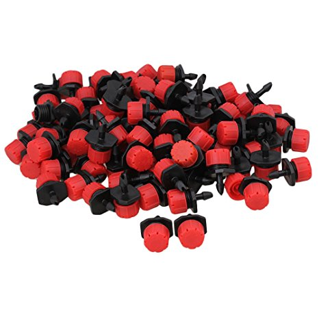
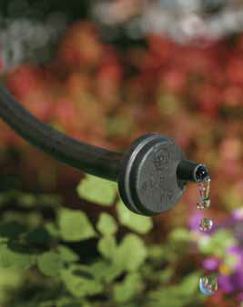
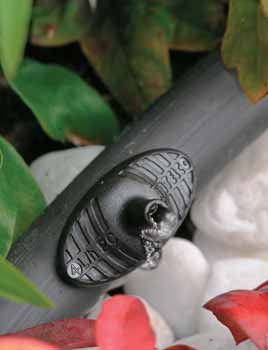
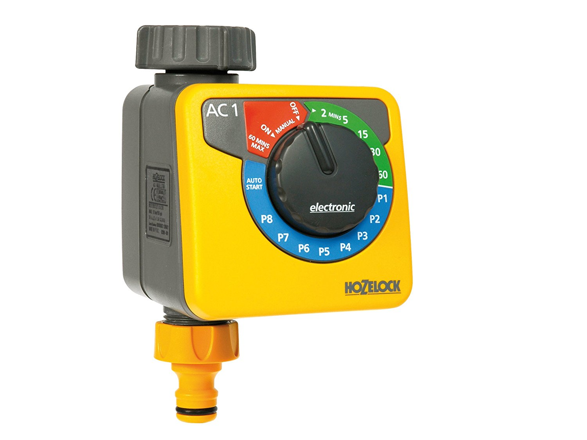
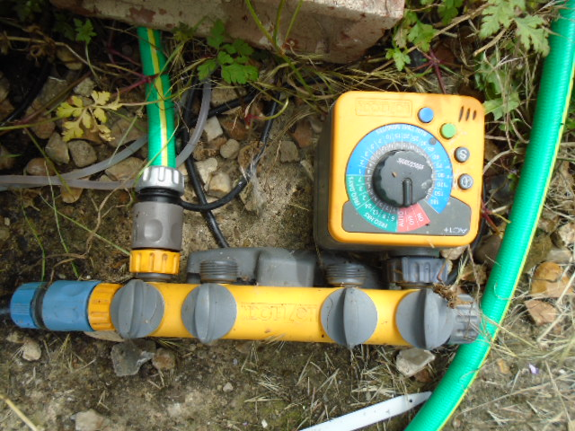
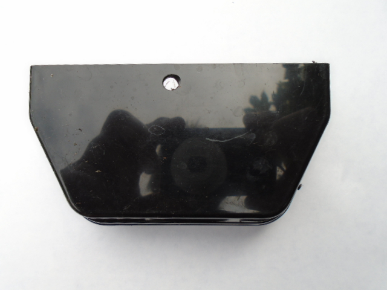
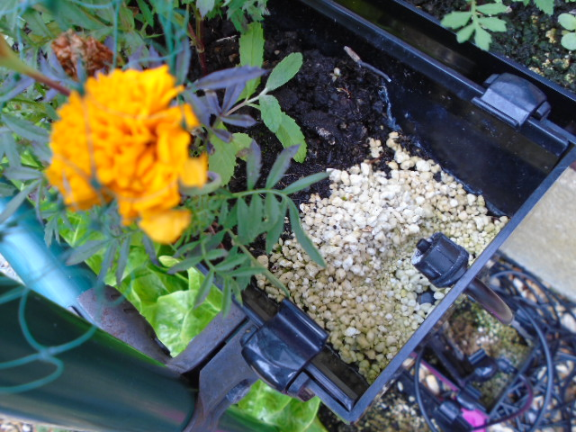
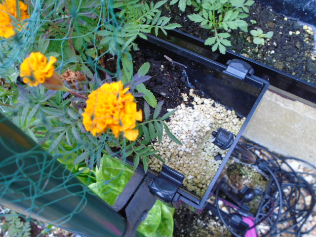
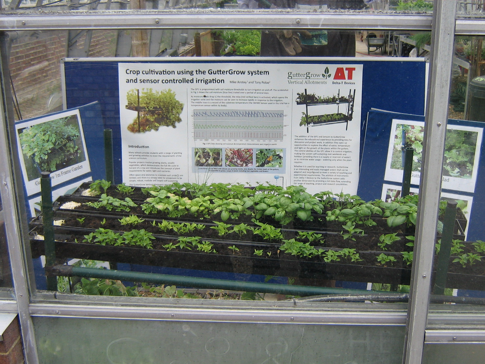

Guidelines - Project Two - 4 Steps
Automate your irrigation system for £50
If you find regular irrigation by hand is getting you down, or you are off on holiday, or you want your system to look after itself, this next project will automate the irrigation process by introducing a timer which will then control the irrigation. You set the timer to turn on the water or nutrient fluid at specified intervals and then the water runs into the higher end of your gutters and then drains down to the lower end and any excess drains off into a drip tray.
HINT - All your plants are irrigated according to the angle between the higher and lower end of the gutters. The greater the angle the greater the drainage (simple but effective).
What you need:
- Irrigation drippers
- Micro irrigation PVC tubing
- Battery opperated irrigation timer
Step 1 Get hold of some irrigation drippers
Irrigation drippers come in all sorts of shapes and size

Drippers can be bought from specialist suppliers, DIY or gardening stores or online from a range of outlets. We bought ours from Amazon.
Some drippers are rated in terms of the number of litres per hour they will introduce and others are adjustable so that you can vary the amount of irrigation through the dripper. If you are growing a variety of plants in a variety of gutters then you may find the adjustable type more useful.
Drippers typically have around a ¼ in/4mm barb that will allow the fitting and gripping into 4mm (ID) inside diameter 6/7mm (OD) outside diameter plastic (typically PVC) irrigation tubing.
Some precision drippers are expensive (£3 each) and some are ‘excellent value’ (£3 for 50 on Amazon).
HINT - If you regulate the angle of your gutters you control the drainage with any excess irrigation draining away and so you may be quite happy with the ‘value’ dripper product. Just ensure your ‘value’ drippers allow slightly more than enough irrigation water in at periodic intervals – any excess will just drain away or be caught in a drip tray for re-use.
HINT - If you want to introduce plant food you can place it at the higher sealed end of the gutter and then when the irrigation water flows from the dripper it will wash the plant food down the length of the gutter.
Step 2 Get hold of some irrigation tubeing
You have to ensure that the tubing you buy will fit and grip the irrigation drippers that you have selected. Usually this will be what it termed ‘micro irrigation PVC tubing’ and typically this will be the 4mm(ID - Inside diameter ) and 6/7mm(OD - Outside diameter) PVC tubing mentioned above. A link to sources is included at the end of the guide.
Step 3 Get hold of an irrigation timer
Battery powered operated irrigation timers can be bought from specialist suppliers, DIY or gardening stores or online from a range of outlets. A list of possible sources is included at the end of this Guide. You should be able to pick up a reasonable one for aound £15-£30. You should check that it will fit onto your tap, your adaptor, your hose or other water source.

Step 4 Drill a hole in the sealed end fitting, fit tube to timer and through the hole to the dripper

The size of the hole should match the OD (outside diameter) of the irrigation tube you have chosen. Push the irrigation tube through the hole and then push the barbed end of the dripper into the tube.
Connect the irrigation tube to the timer and the timer to the cold water supply - then set the timer to irrigate at regular intervals during the day. With a bit of experimentation you can adjust the frequency and duration of the timer to ensure your plants are correctly irrigated with a small amount or run off to show that irrigation has occured over the full lenght of the gutter.
HINT - In some areas you may need to regulate the water pressure from the cold water supply. The low cost route is to judicially adjust the tap or other connector that your timer is connected to. The higher cost route is to purchase a pressure regulator valve to fit between the timer and the cold water supply.(£7-£10 - Amazon)
Congratulations you now have an irrigation system controlled by a timer !

You can go on holiday and leave it to water itself !!